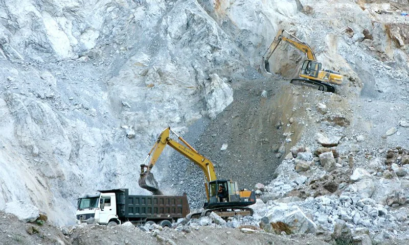
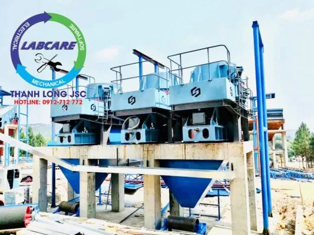
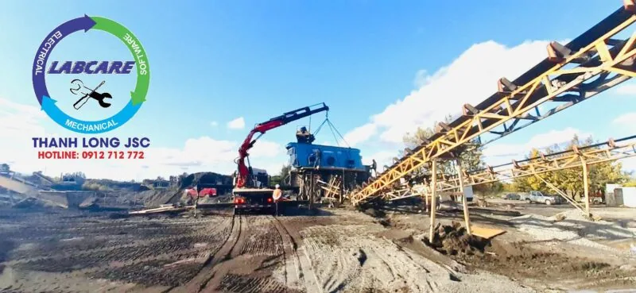
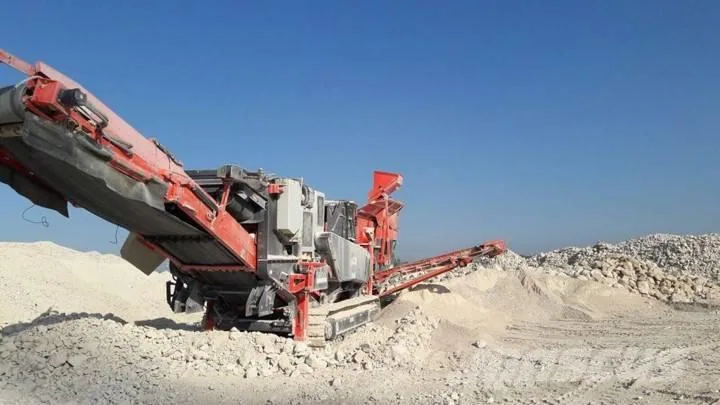
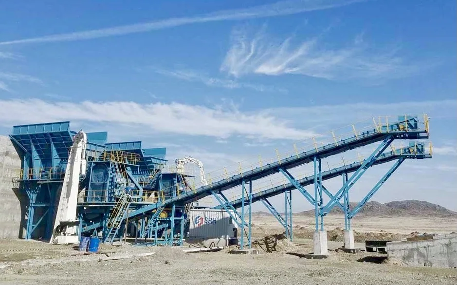

Ngành khai thác VLXD Tỉnh Kiên Giang có trữ lượng khoáng sản tương đối lớn mặc dù đang ở mức thăm dò. Nghiên cứu những bước đầu đã xác định được 152 điểm quặng và 23 mỏ khoáng sản. Nhiên liệu (than bùn), phi kim loại (đá vôi, đá xây dựng, đất sét), nhóm kim loại, đặc biệt là nhóm khoáng sản phi kim loại dùng để sản xuất vật liệu xây dựng, xi măng, than bùn có trữ lượng lớn.

Kiên Giang là tỉnh duy nhất ở vùng đồng bằng sông Cửu Long có nguồn đá vôi khá phong phú. Có giá trị về sản xuất vật liệu xây dựng, tạo ra những hang động và danh lam thắng cảnh có ý nghĩa du lịch.
Trữ lượng đá vôi toàn tỉnh hiện có 440 triệu tấn, có khả năng khai thác 342 triệu tấn. Trong đó trữ lượng khai thác công nghiệp là 235 triệu tấn, đủ nguyên liệu để sản xuất 4,6 triệu tấn clinker/năm trong suốt 40 năm. Than bùn, ước tính còn khoảng 150 triệu tấn, phân bổ tập trung ở U Minh Thượng, huyện An Minh, Vĩnh Thuận, Kiên Lương. Ngoài ra tỉnh còn có nhiều loại khoáng sản khác như đất sét để sản xuất xi măng, đất sét làm gạch ngói, gốm sứ.
Phê duyệt Quy hoạch thăm dò, phát triển và khai thác VLXD Tỉnh Kiên Giang giai đoạn 2016-2020 với mục tiêu chính đến năm 2030
1.Mục tiêu khi khai thác VLXD Tỉnh Kiên Giang
Kế hoạch thăm dò, phát triển và khai thác VLXD Tỉnh Kiên Giang 2016 – 2020. Nhằm đánh giá tiềm năng tài nguyên khoáng sản của tỉnh. Thực trạng khai thác và chế biến khoáng sản trong thời gian qua. Đánh giá nhu cầu sử dụng trong thời gian tới. Căn cứ theo quy định của Luật Khoáng sản, đưa ra các biện pháp quản lý và bảo vệ tài nguyên. Đồng thời xây dựng khai thác, chế biến và sử dụng hợp lý, tiết kiệm tài nguyên khoáng sản và môi trường. Các chiến lược bảo tồn nhằm thúc đẩy phát triển kinh tế – xã hội bền vững của địa phương.
2. Quan điểm phát triển:
a) Khoáng sản là tài nguyên không tái tạo, thuộc tài sản quan trọng của quốc gia. Phải được quản lý, bảo vệ, khai thác và sử dụng hợp lý, tiết kiệm, hiệu quả, đáp ứng yêu cầu công nghiệp hóa, hiện đại hóa. Và để đảm bảo quốc phòng, an toàn và bảo vệ môi trường.
b) Việc điều tra, đánh giá khoáng sản phải có bước đi trước. Làm rõ tiềm năng tài nguyên khoáng sản để xây dựng kế hoạch thăm dò, phát triển, chế biến, sử dụng khoáng sản và dự trữ quốc gia.
c) Việc thăm dò, phát triển khoáng sản phải gắn với chế biến. Sử dụng theo tiềm năng của từng loại khoáng sản và nhu cầu của ngành kinh tế.
d) Chế biến khoáng sản phải sử dụng công nghệ bảo vệ môi trường tiên tiến. Để tạo ra sản phẩm có giá trị kinh tế cao, chủ yếu phục vụ hộ gia đình. Chỉ sản phẩm sau chế biến có giá trị kinh tế cao mới xuất khẩu sang khoáng sản quy mô lớn.
đ) Đẩy mạnh hợp tác quốc tế để tiếp thu khoa học hiện đại. Ứng dụng công nghệ tiên tiến vào tìm kiếm, thăm dò, khai thác và chế biến khoáng sản.
3. Thực trạng khoáng sản khan hiếm, tăng giá cao trong khai thác VLXD tại Tỉnh Kiên Giang
Hiện nay, giá cát đá xây dựng tại các tỉnh miền Tây đang ở mức cao kỷ lục. Tăng đột biến từ 50-200% so với thời điểm đầu năm. Giá đá cát xây dựng đang ở mức trên 800 ngàn đồng/m3. Khiến cho nhiều nhà thầu xây dựng lâm vào cảnh thi công cầm chừng vì chi phí bị đội lên. Gây không ít khó khăn cho người dân và nhà thầu xây dựng. Nguồn khai thác VLXD Tỉnh Kiên Giang đã đến lúc phải tìm nguồn vật liệu thay thế.
Theo số liệu điều tra của Bộ Xây dựng, nhu cầu về cát từ năm 2016 đến năm 2020 cần xấp xỉ 2,3 tỷm3. Trong khi trữ lượng hiện nay chỉ còn hơn 1 tỷm3. Dự báo đến năm 2022, với mức độ sử dụng cát sẽ đạt khoảng 130 triệu m3/năm. Thì sẽ không còn cát phục vụ cho xây dựng.
Để đáp ứng nhu cầu cao về xây dựng tại các tỉnh miền Tây nói riêng, và toàn quốc nói chung. Nhiều chuyên gia đưa một số giải pháp sử dụng vật liệu nhân tạo khác thay thế cát. Ông Nguyễn Tiến Đỉnh, Giám đốc Trung tâm dự báo và quy hoạch phát triển vật liệu xây dựng. Bộ Xây dựng cho biết, nguồn đầu tiên có thể nghĩ đến là sử dụng chính các công nghệ. Thiết bị tiên tiến đi đầu trong lĩnh vực khai khoáng và sản xuất VLXD.


4. Các nhà cung cấp thiết bị khai thác khoáng sản lớn nhất thế giới và hướng giải quyết cho ngành khai thác VLXD Tỉnh Kiên Giang


Nếu bạn là một nhà đầu tư thông minh, muốn đầu tư một dây chuyền máy nghiền đá chi phí đầu tư thấp. Thu hồi vốn nhanh, tuổi thọ máy cao. Tiết kiệm điện thì bạn biết nên chọn gì rồi đó !!
Sandvik – Thụy Điển lựa chọn số 2 khi tìm kiếm báo giá và tư vấn

Ra đời sau Phần Lan, tuy nhiên hãng máy từ Thụy điển này vươn lên thật sự mạnh mẽ họ có có hệ thống phân phối hoạt động rộng tại 130 quốc gia, các sản phẩm thế mạnh tập trung ở lĩnh vực khoan, thiết bị cắt, đặc biệt là các giải pháp nghiền sàng cho ngành khai thác mỏ.
Cũng giống như Phần Lan, tất cả các thiết bị của Sandvik đều theo tiêu chuẩn của EU/G7, với kết cấu gọn nhẹ và bộ điều khiển thông minh.
Ở Việt Nam hiện nay có rất nhiều thiết bị khoan của Sandvik, về máy nghiền đá thì rất ít do giá tương đối cao và chưa có dịch vụ bảo hành sau bán hàng. Nếu chủ mỏ đam mê công nghệ, có thể chọn Sandvik như 1 giải pháp. Vì so sánh về giá thành, máy Sandvik hoàn toàn cạnh tranh so với máy nghiền Nhật Bản. Hay Đài Loan cũ về điện năng hay độ bền bỉ.
Nếu yêu thích công nghệ, và muốn khám phá cái mới thì cũng có thể cân nhắc báo giá máy nghiền đá của Sandvik.
Shaorui (SRH), sự lựa chọn hoàn hảo nếu muốn sử dụng công nghệ Châu Âu với giá cả cạnh tranh.

Mặc dù thành lập gần được 30 năm, nhưng đây là nhà sản xuất số 1 ở Châu Á về máy nghiền đá. Là Công ty con của Phần Lan tại Châu Á, Shaorui thừa hưởng lại thiết kế của Phần Lan, lại được gia công hiệu chuẩn theo đúng tiêu chuẩn EU/G7 dưới sự giám sát các kĩ sư của Phần Lan, nên sản phẩm tạo ra khá chất lượng, vượt xa so về độ bền và năng suất so với máy của Nhật Bản hay Hàn Quốc.
Đặc biệt là dòng côn bán thủy lực SC hay côn thủy lực SG và SCH của hãng SRH. Hoạt động rất hiệu quả cho ra chất lượng đá rất đẹp và chịu được độ mài mòn cao. Với lợi thế về giá thành, chất lượng tương đối tốt và đặc biệt là đội ngũ kĩ thuật bảo trì mạnh. Đây là đơn vị có rất nhiều dây chuyền ở Việt Nam nhất. Thay vì đầu tư hàng Nhật bãi hay Minyu cũ, hoàn toàn nên chọn SRH vì độ bền và chi phí sản xuất thấp hơn hẳn.
Hiện nay máy nghiền đá của Shaorui được lắp đặt rất đồng loạt ở Bình Dương, Đồng Nai, Hà Nam, Hòa Bình, Quảng Bình, Tuyên Quang…
Chúng tôi tin rằng sử dụng máy nghiền của Shaorui là sự lựa chọn tốt nhất.
Hãy lựa chọn Thanh Long JSC để báo giá máy nghiền đá cho dự án của bạn.
Liên hệ với Thanh Long JSC để nhận được báo giá tốt nhất.

SRH – lựa chọn hàng đầu về chất lượng, uy tín và báo giá gốc.
SRH thừa hưởng lại toàn bộ những kinh nghiệm, thành tựu đã có được trong hơn 150 năm nghiên cứu và phát triển. Từ những kinh nghiệm về kiểu dáng, chất lượng thép cho đến động cơ. Máy nghiền đá của SRH được sản xuất, hiệu chuẩn dưới sự giám sát chặt chẽ của các kỹ sư. Chính vì thế sản phẩm tạo ra có chất lượng tương đương, và khả năng hoạt động với nhà sản xuất Thanh Long JSC. Thậm chí máy nghiền đá của SRH, còn được xuất khẩu sang Châu Âu và Châu Mỹ La tinh.
Ưu điểm của máy nghiền đá SRH
- Hiệu suất nghiền cao, tiết kiệm điện và thu hồi vốn nhanh.
- Thiết bị nhẹ hơn về khối lượng nên thuận tiện cho việc di chuyển và lắp đặt.
- Không có thời gian dừng máy, hoạt động 24/24 là điểm mạnh của dây chuyền Thanh Long JSC.
- Doanh thu, uy tín và chất lượng đứng đầu trong ngành nên thị trường Việt Nam.
- Chi phí vật tư tiêu hao thấp, chi phí sản xuất và lợi nhuận trên đầu khối đá thấp.
- Chế độ bảo hành, bảo dưỡng luôn có thời gian cao nhất cả nước.
Thanh Long JSC tự hào là đại diện duy nhất của SRH tại Việt Nam. Với năng lực và sự chuyên nghiệp đứng nhất cả nước, về các dây chuyền máy nghiền đá và dây chuyền cát nhân tạo, Thanh Long JSC đã lắp đặt hơn 40 dây chuyền các loại. Côn thủy lực và máy nghiền cát SV là 2 sản phẩm luôn làm bùng nổ doanh số hằng năm, trên thế giới và cả Việt Nam nói riêng.
Bình thuận, Bình Dương. Bà Rịa Vũng Tàu, Lào Cai. Bắc Kạn, Cao Bằng. Kiên Giang, Vĩnh Long, … Đều có dây chuyền và thiết bị của SRH.
Nhận báo giá và tư vấn miễn phí
Để được biết thêm thông tin chi tiết về các loại dây chuyền nghiền máy nghiền cát SV hoặc dây chuyền máy nghiền đá từ thủ công đến chuyên nghiệp, hãy liên hệ tới hotline: 0912.712.772 để được tư vấn giải pháp đầu tư tiết kiệm, hiệu quả nhất và báo giá miễn phí.